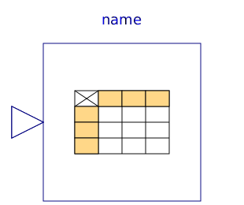

This package contains blocks for one- and two-dimensional interpolation in tables.
Especially for use on real-time platform targets (e.g., HIL-simulators) with no file system, it is possible to statically store tables using a function "usertab" in a file conventionally named "usertab.c". This can be more efficient than providing the tables as Modelica parameter arrays.
This is achieved by providing the tables in a specific structure as C-code and compiling that C-code together with the rest of the simulation model into a binary that can be executed on the target platform. The "Resources/Data/Tables/" subdirectory of the MSL installation directory contains the files "usertab.c" and "usertab.h" that can be used as a template for own developments. While "usertab.c" would be typically used unmodified, the "usertab.h" needs to adapted for the own needs.
In order to work it is necessary that the compiler pulls in the "usertab.c" file. Different Modelica tools might provide different mechanisms to do so. Please consult the respective documentation/support for your Modelica tool.
A possible (though a bit "hackish") Modelica standard conformant approach is to pull in the required files by utilizing a "dummy"-function that uses the Modelica external function interface to pull in the required "usertab.c". An example how this can be done is given below.
model Test25_usertab "Test utilizing the usertab.c interface"
extends Modelica.Icons.Example;
public
Modelica.Blocks.Sources.RealExpression realExpression(y=getUsertab(t_new.y))
annotation (Placement(transformation(extent={{-40,-34},{-10,-14}})));
Modelica.Blocks.Tables.CombiTable1D t_new(tableOnFile=true, tableName="TestTable_1D_a")
annotation (Placement(transformation(extent={{-40,0},{-20,20}})));
Modelica.Blocks.Sources.Clock clock
annotation (Placement(transformation(extent={{-80,0},{-60,20}})));
protected
encapsulated function getUsertab
input Real dummy_u[:];
output Real dummy_y;
external "C" dummy_y= mydummyfunc(dummy_u);
annotation(IncludeDirectory="modelica://Modelica/Resources/Data/Tables",
Include = "#include "usertab.c"
double mydummyfunc(const double* dummy_in) {
return 0;
}
");
end getUsertab;
equation
connect(clock.y,t_new. u[1]) annotation (Line(
points={{-59,10},{-42,10}},
color={0,0,127},
smooth=Smooth.None));
annotation (experiment(StartTime=0, StopTime=5), uses(Modelica(version="3.2.1")));
end Test25_usertab;
| Name | Description |
|---|---|
| Table look-up in one dimension (matrix/file) with n inputs and n outputs | |
| Table look-up in one dimension (matrix/file) with one input and n outputs | |
|  CombiTable2D | Table look-up in two dimensions (matrix/file) |